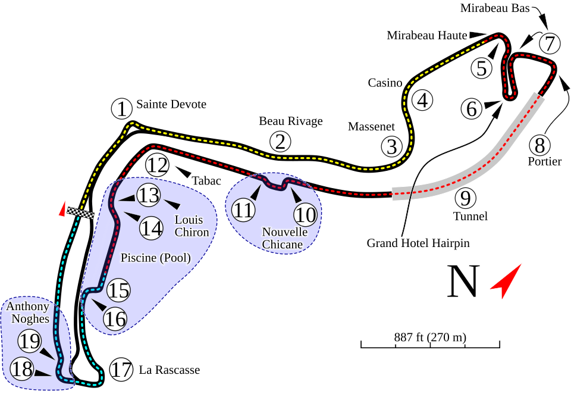

El Circuito en números
El Gran Premio Louis Vuitton de Mónaco 2026 F1:
- Distancia total de la carrera 260,286 kilómetros (recorridos en 78 vueltas).
- Número de curvas 19 curvas.
- Longitud total 3,3337 kilómetros por vuelta.
Características de un Circuito Urbano
Los circuitos callejeros como Mónaco presentan retos únicos:
- Ausencia de escapatorias amplias (muros muy cercanos).
- Dificultad extrema para realizar adelantamientos.
- Configuración aerodinámica orientada a máxima carga (downforce).

Fuente de la imagen: Wikimedia Commons (Licencia CC)